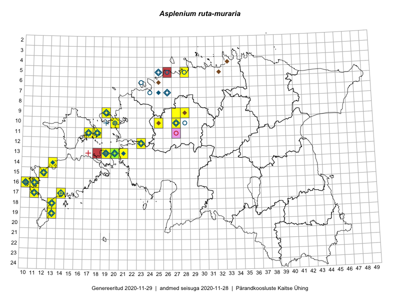

Asplenium ruta-muraria
Uuendatud: 2016-12-02
Kaardile koondatud taksonid: Asplenium ruta-muraria L.

Kaart põhineb 24 vaatlusel. Taksonit on leitud 14 ruudust.
Kuvatud viited 20 esimesele andmebaasikirjele, ülejäänud PlutoFis
- Eeva-Maria Jeletsky, Tarmo Niitla: 2015-06-17: 11-18: GPS punkt
- Eeva-Maria Jeletsky, Tarmo Niitla: 2015-06-17: 11-18: ala
- Oliver Parrest: 2015-05-21: 19-13: GPS punkt
- Sirje Azarov, Mari Reitalu: 2015-04-27: 17-14: ala
- Mari Reitalu, Oliver Parrest: 2015-05-27: 18-13: ala
- Sirje Azarov, Mari Reitalu: 2015-05-27: 17-14: GPS punkt
- Sirje Azarov, Mari Reitalu: 2015-05-22: 16-10: ala
- Sirje Azarov, Mari Reitalu: 2015-05-22: 16-10: GPS punkt
- Mari Reitalu, Triin Reitalu: 2015-08-05: 17-11: ala
- Aat Sarv: 2015-07-21: 10-25: ala
- Meeli Mesipuu: 2015-05-15: 11-18: GPS punkt
- Kadri Tali: 2015-04-15: 13-20: ala
- Kadri Tali: 2015-06-03: 13-19: ala
- Peedu Saar, Ott Luuk, Meeli Mesipuu, Thea Kull, Kersti Püssa, Rein Kalamees, Toomas Kukk: 2014-06-10: 10-27: ala
- Aat Sarv: 2015-05-02: 09-28: ala
- Aat Sarv: 2015-08-27: 09-28: ala
- Oliver Parrest: 2015-05-20: 19-13: GPS punkt
- Tõnu Ploompuu, Anna-Grete Rebane, Hanna-Eliisa Luts: 2015-07-20: 10-20: ala
- Oliver Parrest, Mari Reitalu: 2015-05-27: 18-13: GPS punkt
- Aat Sarv: 2015-05-15: 09-27: ala